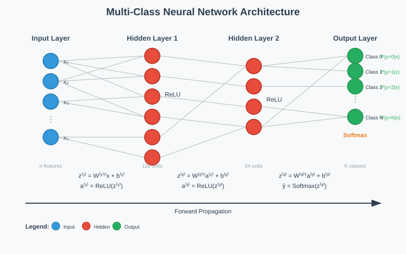
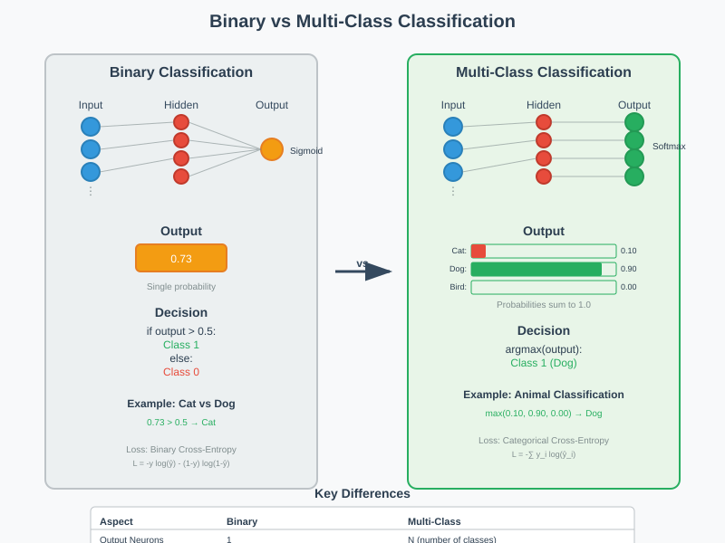
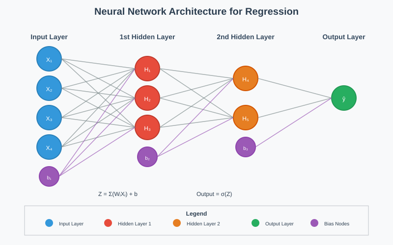
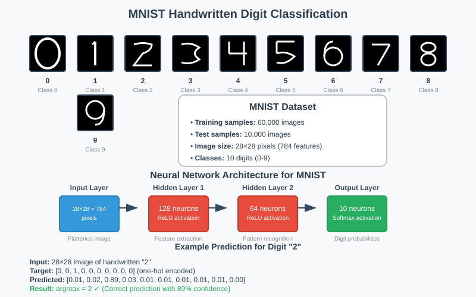
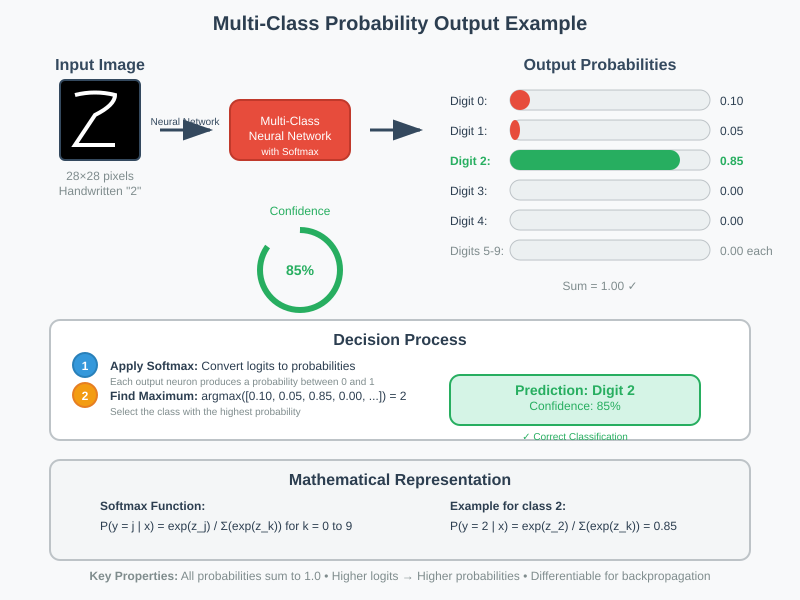
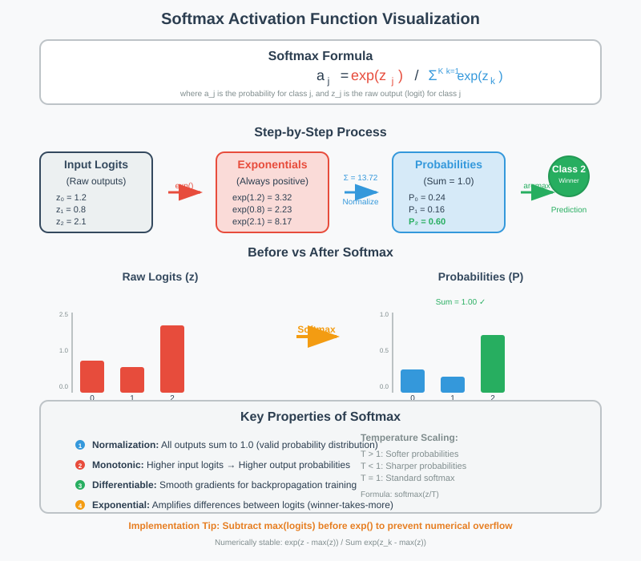

Neural Network Multi-Class Predictions
📋 Quick Navigation
- Overview
- Multi-Class vs Binary Classification
- Neural Network Architecture
- MNIST Dataset Example
- Softmax Activation Function
- Mathematical Foundation
- Implementation Example
- Model Comparison
- 🚀 Colab Integration
- References & Further Reading
🎯 Overview
Multi-class classification in neural networks represents a fundamental advancement from binary classification, enabling models to distinguish between multiple categories simultaneously. This documentation explores the architecture, mathematics, and implementation of neural networks designed for multi-class prediction tasks.
Key Concepts: - Extension of binary classification to multiple classes - Probability distribution across all possible classes - Softmax activation for normalized outputs - Argmax selection for final predictions

🔄 Multi-Class vs Binary Classification
The transition from binary to multi-class classification involves minimal architectural changes but significant conceptual shifts in output interpretation and loss calculation.
Binary Classification Characteristics
- Output Layer: Single neuron
- Activation: Sigmoid function
- Output Range: [0, 1] representing probability
- Decision: Threshold-based (typically 0.5)
Multi-Class Classification Characteristics
- Output Layer: N neurons (where N = number of classes)
- Activation: Softmax function
- Output Range: [0, 1] for each class, summing to 1.0
- Decision: Argmax operation

Hidden Layer Operations: Identical between binary and multi-class networks. The core difference lies exclusively in the output layer architecture and activation function choice.
🏗️ Neural Network Architecture
The multi-class neural network maintains the same fundamental structure as binary classification networks, with modifications concentrated in the output layer.
Architecture Components
Input Layer - Receives feature vectors (e.g., pixel values for images) - Dimension matches input feature space - No activation function applied
Hidden Layers
- Apply weighted transformations: z = W^T × a_prev + b
- Use activation functions (ReLU, tanh, etc.)
- Extract hierarchical feature representations
- Operations identical to binary classification
Output Layer
- N neurons corresponding to N classes
- Each neuron computes: z_j = w_j^T × a_prev + b_j
- Softmax activation applied across all output neurons
- Produces probability distribution over classes

🔢 MNIST Dataset Example
The MNIST handwritten digit recognition task exemplifies multi-class classification, requiring discrimination between 10 distinct digit classes (0-9).
Dataset Specifications
- Classes: 10 (digits 0, 1, 2, 3, 4, 5, 6, 7, 8, 9)
- Input: 28×28 pixel grayscale images (784 features)
- Output: 10-dimensional probability vector
- Training Samples: 60,000 images
- Test Samples: 10,000 images

Network Configuration for MNIST
Input Layer: 784 neurons (28×28 pixels)
Hidden Layer 1: 128 neurons (ReLU activation)
Hidden Layer 2: 64 neurons (ReLU activation)
Output Layer: 10 neurons (Softmax activation)
Example Output Interpretation
For an input image of digit "2":
Ideal Output: [0, 0, 1, 0, 0, 0, 0, 0, 0, 0]
Actual Output: [0.01, 0.02, 0.89, 0.03, 0.01, 0.01, 0.01, 0.01, 0.01, 0.00]
Prediction: argmax(output) = 2 ✅

🎯 Softmax Activation Function
The Softmax function transforms raw neural network outputs (logits) into a normalized probability distribution, ensuring outputs sum to 1.0 and enabling probabilistic interpretation.
Mathematical Definition
Where:
- a_j = output probability for class j
- z_j = raw output (logit) for neuron j
- K = total number of classes
- exp() = exponential function
Function Properties
Normalization: Ensures ∑(a_j) = 1.0 across all classes
Probabilistic: Each output represents P(class_j | input)
Differentiable: Enables gradient-based optimization
Monotonic: Preserves relative ordering of logits

Implementation Example
import numpy as np
def softmax(logits):
"""
Compute softmax activation with numerical stability
"""
# Subtract max for numerical stability
exp_logits = np.exp(logits - np.max(logits))
return exp_logits / np.sum(exp_logits)
# Example usage
logits = [2.0, 1.0, 0.1]
probabilities = softmax(logits)
print(f"Probabilities: {probabilities}")
# Output: [0.659, 0.242, 0.099]
📊 Mathematical Foundation
Understanding the mathematical principles underlying multi-class neural networks is crucial for effective implementation and debugging.
Forward Propagation
Hidden Layers:
Output Layer:
Loss Function (Categorical Cross-Entropy)
Where:
- m = number of training examples
- K = number of classes
- y_ij = true label (one-hot encoded)
- a_ij^[L] = predicted probability
Backpropagation
Output Layer Gradient:
Hidden Layer Gradients:
💻 Implementation Example
Here's a complete implementation of multi-class classification using TensorFlow/Keras:
import tensorflow as tf
from tensorflow import keras
import numpy as np
import matplotlib.pyplot as plt
class MultiClassNeuralNetwork:
def __init__(self, input_dim, hidden_dims, num_classes):
self.model = self._build_model(input_dim, hidden_dims, num_classes)
def _build_model(self, input_dim, hidden_dims, num_classes):
"""Build neural network architecture"""
model = keras.Sequential()
# Input layer
model.add(keras.layers.Dense(hidden_dims[0],
input_shape=(input_dim,),
activation='relu'))
# Hidden layers
for units in hidden_dims[1:]:
model.add(keras.layers.Dense(units, activation='relu'))
# Output layer with softmax
model.add(keras.layers.Dense(num_classes, activation='softmax'))
return model
def compile_model(self, learning_rate=0.001):
"""Compile model with appropriate loss and metrics"""
self.model.compile(
optimizer=keras.optimizers.Adam(learning_rate=learning_rate),
loss='categorical_crossentropy',
metrics=['accuracy', 'top_k_categorical_accuracy']
)
def train(self, X_train, y_train, epochs=50, batch_size=128, validation_split=0.2):
"""Train the neural network"""
history = self.model.fit(
X_train, y_train,
epochs=epochs,
batch_size=batch_size,
validation_split=validation_split,
verbose=1
)
return history
def predict(self, X_test):
"""Make predictions on test data"""
probabilities = self.model.predict(X_test)
predictions = np.argmax(probabilities, axis=1)
return predictions, probabilities
# MNIST Example Implementation
def train_mnist_classifier():
# Load and preprocess MNIST data
(X_train, y_train), (X_test, y_test) = keras.datasets.mnist.load_data()
# Normalize pixel values
X_train = X_train.reshape(-1, 784) / 255.0
X_test = X_test.reshape(-1, 784) / 255.0
# Convert labels to categorical
y_train_cat = keras.utils.to_categorical(y_train, 10)
y_test_cat = keras.utils.to_categorical(y_test, 10)
# Create and train model
model = MultiClassNeuralNetwork(input_dim=784,
hidden_dims=[128, 64],
num_classes=10)
model.compile_model()
history = model.train(X_train, y_train_cat, epochs=20)
# Evaluate model
test_loss, test_accuracy, top_k_acc = model.model.evaluate(X_test, y_test_cat, verbose=0)
print(f"Test Accuracy: {test_accuracy:.4f}")
return model, history
# Run the example
if __name__ == "__main__":
trained_model, training_history = train_mnist_classifier()
📈 Model Comparison
| Aspect | Binary Classification | Multi-Class Classification |
|---|---|---|
| Output Neurons | 1 | N (number of classes) |
| Activation Function | Sigmoid | Softmax |
| Loss Function | Binary Cross-Entropy | Categorical Cross-Entropy |
| Output Range | [0, 1] | [0, 1] per class, sum = 1 |
| Decision Method | Threshold (>0.5) | Argmax |
| Computational Complexity | O(1) output | O(N) output |
| Memory Requirements | Minimal | Linear with classes |
| Training Stability | High | Moderate (vanishing gradients) |
Performance Metrics
Multi-Class Specific Metrics: - Top-k Accuracy: Correct class in top k predictions - Macro F1-Score: Average F1 across all classes - Micro F1-Score: Global F1 considering all classes - Confusion Matrix: N×N matrix showing classification errors
🚀 Colab Integration
Quick Start Notebook

Advanced Implementation

Code Repository
git clone https://github.com/example/neural-network-multiclass.git
cd neural-network-multiclass
pip install -r requirements.txt
python train_mnist.py
Hugging Face Models
📚 References & Further Reading
📖 Core Papers & Resources
- "Deep Learning" by Ian Goodfellow, Yoshua Bengio, and Aaron Courville
- Comprehensive treatment of neural network fundamentals
-
"Pattern Recognition and Machine Learning" by Christopher Bishop
- Mathematical foundations of classification
-
Original MNIST Dataset Paper
- LeCun, Y., Bottou, L., Bengio, Y., & Haffner, P. (1998)
-
"Understanding the difficulty of training deep feedforward neural networks"
- Glorot, X., & Bengio, Y. (2010)
-
"Batch Normalization: Accelerating Deep Network Training"
- Ioffe, S., & Szegedy, C. (2015)
-
"Adam: A Method for Stochastic Optimization"
- Kingma, D. P., & Ba, J. (2014)
-
TensorFlow Multi-Class Classification Guide
- Official documentation and tutorials
-
PyTorch Classification Tutorial
- Hands-on implementation examples
- 🔗 PyTorch.org
🎓 Learning Resources
- Fast.ai Practical Deep Learning Course
- CS231n: Convolutional Neural Networks for Visual Recognition
- Neural Networks and Deep Learning (Coursera)
Documentation created for professional AI development and research. Last updated: September 2025.